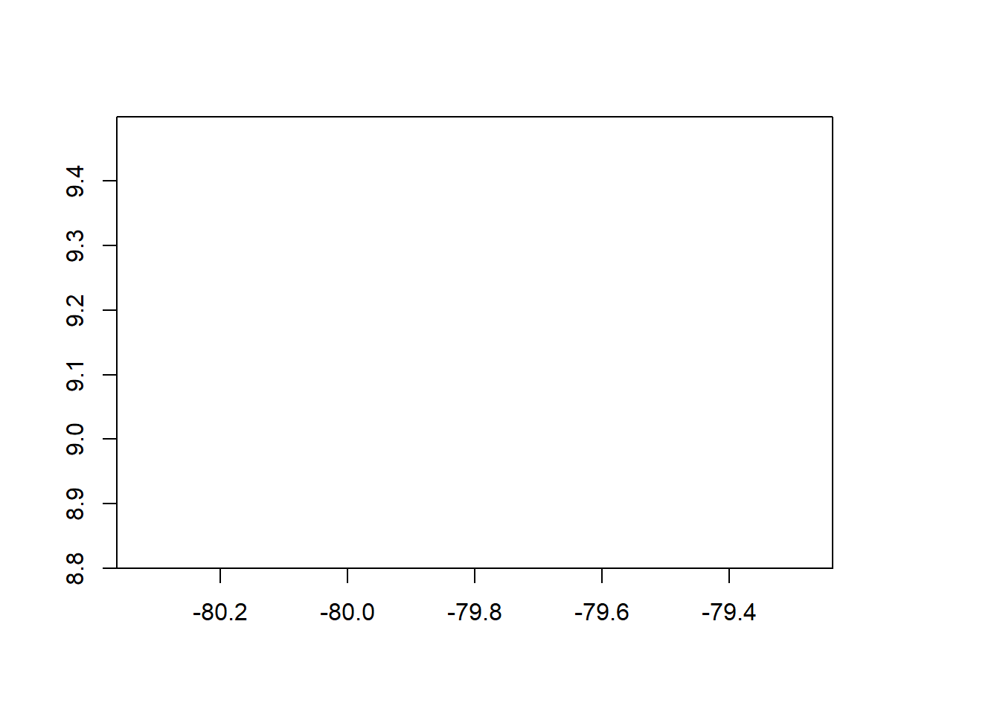

library(terra)
library(ncdf4)
library(dplyr)
library(tidyr)4 Download precipitation gridded products
4.1 About
The following code downloads, crops, and calculates climatologies, as well as monthly and yearly time series for 11 precipitation products. Be aware that downloading the full datasets can take several hours. Once the data are cropped and processed into climatologies, and monthly and yearly time series, the final dataset is approximately 250 MB. For convenience, a compressed, cropped version is available. Please contact vasquezvicente@ufl.edu for access.
4.2 Libraries
We utilize the terra package for cropping, stacking and calculating rasters (Hijmans 2024). The ncdf4 package is used to read NC files(Pierce 2024).
4.3 Requirements
We have gather all the permanent links directly to each of the repositories and are available in the csv. We utilize the curl method for downloads but you might need to use another method depending on your machine.
dir.create("../data_reanalysis", showWarnings = FALSE)
extentMap <- terra::ext(c(-80.2,-79.4, 8.8, 9.5))
options(download.file.method = "curl")
options(timeout = 1080000)
links<-read.csv("../tables/reanalysis_links.csv", header = TRUE, sep = ",") 4.4 Functions
Some of the datasets follow the same file organization and format, thus created functions for each of the cases.
checkdir<-function(dataset1) {
if (dir.exists(paste0("../data_reanalysis/",dataset1)) == FALSE) {
dir.create(paste0("../data_reanalysis/", dataset1), showWarnings = FALSE)
print(paste0("created directory", "./data_reanalysis/",dataset1))
}else{print(paste0("directory", "./data_reanalysis/",dataset1, " already exists"))}
}
download_chelsa<-function(dataset){
for (i in 1:nrow(dataset)) {
destfile <- paste0("../data_reanalysis/", dataset$source[i], "/", dataset$filename[i])
if (file.exists(destfile) == FALSE) {
print(paste0("downloading ", dataset$filename[i]))
download.file(dataset$link[i], destfile = destfile, method = "curl")
ras <- terra::rast(destfile)
ras <- terra::crop(ras, extentMap)
writeRaster(ras, filename = destfile, overwrite = TRUE)
}else{
print(paste0("file ", dataset$filename[i], " already exists"))
}
}
}
download_chelsa2<-function(dataset){
for (i in 1:nrow(dataset)) {
destfile <- paste0("../data_reanalysis/", dataset$source[i], "/", dataset$filename[i])
if (file.exists(destfile) == FALSE) {
print(paste0("downloading ", dataset$filename[i]))
download.file(dataset$link[i], destfile = destfile, method = "curl")
ras <- terra::rast(destfile)
ras <- terra::crop(ras, extentMap)
ras <- terra::app(ras, fun = function(x) { x * 0.1 })
writeRaster(ras, filename = destfile, overwrite = TRUE)
}else{
print(paste0("file ", dataset$filename[i], " already exists"))
}
}
}
download_chp<-function(dataset){
for (i in 1:nrow(dataset)) {
destfile <- paste0("../data_reanalysis/", dataset$source[i], "/", dataset$filename[i])
destfile2<- gsub(".gz","",destfile)
if (file.exists(destfile2) == FALSE) {
download.file(dataset$link[i], destfile = destfile, method = "curl")
R.utils::gunzip(destfile, remove = TRUE)
destfile=gsub(".gz","",destfile)
ras <- terra::rast(destfile)
ras <- terra::crop(ras, extentMap)
writeRaster(ras, filename = destfile, overwrite = TRUE)
}else {
print(paste0(destfile2, " already exists"))
}
}
}
download_terra<-function(dataset){
for (i in 1:nrow(dataset)) {
destfile <- paste0("../data_reanalysis/", dataset$source[i], "/", dataset$filename[i])
if (file.exists(paste0(destfile,"_1.tif")) == FALSE) {
download.file(dataset$link[i], destfile = destfile, method = "curl")
ras <- terra::rast(destfile)
ras <- terra::crop(ras, extentMap)
Sys.sleep(1)
for (t in 1:nlyr(ras)) {
writeRaster(ras[[t]], filename = paste0(destfile,"_",t, ".tif"), overwrite = TRUE)
}
unlink(destfile)
}else {
print(paste0(destfile, " already exists"))
}
}
}
download_pbcor<-function(dataset){
for (i in 1:nrow(dataset)) {
destfile <- paste0("../data_reanalysis/", dataset$source[i], "/", dataset$filename[i])
if (file.exists(destfile) == FALSE) {
download.file(dataset$link[i], destfile = destfile, method = "libcurl")
unzip(destfile, exdir = dirname(destfile))
data<-list.files(dirname(destfile),pattern = ".nc")
raschelsa<- terra::rast(paste0(dirname(destfile),"/",data[1]))
raschelsa<- terra::crop(raschelsa, extentMap)
for (t in 1:nlyr(raschelsa)) {
print("writting")
writeRaster(raschelsa[[t]], filename = paste0("../data_reanalysis/","_",t, ".tif"), overwrite = TRUE)
}
raschp<- terra::rast(paste0(dirname(destfile),"/",data[2]))
raschp<- terra::crop(raschp, extentMap)
for (t in 1:nlyr(raschp)) {
print("writting")
writeRaster(raschp[[t]], filename = paste0(destfile,"_",t, ".tif"), overwrite = TRUE)
}
rasworl<- terra::rast(paste0(dirname(destfile),"/",data[3]))
rasworl<- terra::crop(rasworl, extentMap)
for (t in 1:nlyr(rasworl)) {
print("writting")
writeRaster(rasworl[[t]], filename = paste0(destfile,"_",t, ".tif"), overwrite = TRUE)
}
unlink(paste0(dirname(destfile),"/",data[1]))
unlink(paste0(dirname(destfile),"/",data[2]))
unlink(paste0(dirname(destfile),"/",data[3]))
unlink(paste0(dirname(destfile),"/","readme.txt"))
unlink(destfile)
}else {
print(paste0(destfile, " already exists"))
}
}
}4.5 Download regular climatologies
CHELSA 1.2 timeseries and climatologies, as well as the version 2.1 (Dirk N. Karger et al. 2018). CHPclim v1.0 climatology(C. Funk et al. 2015). CHIRPS v2.0 climatology and timeseries(Chris Funk et al. 2015). TerraClimate climatology and timeseries (Abatzoglou et al. 2018)
#CHELSA 1.2 climatology
dataset_chelsa1 <- links %>% filter(source == "CHELSA 1.2" & type == "climatology")
checkdir(dataset_chelsa1$source[1])
download_chelsa(dataset_chelsa1)
#CHELSA 2.1 climatology
dataset_chelsa2 <- links %>% filter(source == "CHELSA 2.1" & type == "climatology")
checkdir(dataset_chelsa2$source[1])
download_chelsa2(dataset_chelsa2)
#CHIRPS 2.0 timeseries
dataset_chirps <- links %>% filter(source == "CHIRPS 2.0" & type == "timeseries")
checkdir(dataset_chirps$source[1])
download_chp(dataset_chirps)
#CHPclim climatology
dataset_chpclim <- links %>% filter(source == "CHPclim" & type == "climatology")
checkdir(dataset_chpclim$source[1])
download_chp(dataset_chpclim)
#TerraClimate climatology
dataset_terra <- links %>% filter(source == "TerraClimate" & type == "climatology")
checkdir(dataset_terra$source[1])
download_terra(dataset_terra)Calculate CHIRPS V2 Climatology
chirps<- list.files("../data_reanalysis/CHIRPS 2.0", pattern=".tif", full.names = TRUE)
month <- numeric(length(chirps))
year <- numeric(length(chirps))
for (i in 1:length(chirps)) {
file_parts <- unlist(strsplit(basename(chirps[i]), "\\."))
month[i] <- as.numeric(file_parts[4])
year[i] <- as.numeric(file_parts[3])
}
chirps <- data.frame(chirps, month, year)
if (file.exists("../data_reanalysis/CHIRPS 2.0/climatology")==FALSE){
dir.create("../data_reanalysis/CHIRPS 2.0/climatology", showWarnings = FALSE)
for (m in unique(chirps$month)){
print(paste0("Processing ", m))
ras <- terra::rast(chirps[chirps$month == m, ]$chirps)
print(paste0("Stacked ", m))
ras <- terra::app(ras, mean)
print(paste0("Calculated ", m))
output_file <- paste0("../data_reanalysis/CHIRPS 2.0/climatology/CHIRPS_2.0_", m, ".tif")
terra::writeRaster(ras, filename = output_file, overwrite = TRUE)
}
}else{
print("climatology already proccessed")
}Calculate CHIRPS V2 yearly timeseries
if (file.exists("../data_reanalysis/CHIRPS 2.0/yearly")==FALSE){
dir.create("../data_reanalysis/CHIRPS 2.0/yearly")
for (y in unique(chirps$year)){
print(paste0("Processing ", y))
ras <- terra::rast(chirps[chirps$year == y, ]$chirps)
print(paste0("Stacked ", y))
ras <- terra::app(ras, sum)
print(paste0("Calculated ", y))
output_file <- paste0("../data_reanalysis/CHIRPS 2.0/yearly/CHIRPS_2.0_", y, ".tif")
terra::writeRaster(ras, filename = output_file, overwrite = TRUE)
}
}else{
print("yearly timseries already proccessed")
}4.6 Download non-regular precipitation products
Worldclim 2.1 comes as a zip file and requires a different download method “libcurl”. It also include some metadata files (Fick and Hijmans 2017).
dataset_worlclim <- links %>% filter(source == "WorldClim 2.1" & type == "climatology")
checkdir(dataset_worlclim$source[1])
destfile<- gsub(".zip","_01.tif",paste0("../data_reanalysis/", dataset_worlclim$source[1], "/", dataset_worlclim$filename[1]))
if (file.exists(destfile)==FALSE){
download.file(dataset_worlclim$link[1], destfile = paste0("../data_reanalysis/", dataset_worlclim$source[1], "/", dataset_worlclim$filename[1]), method = "libcurl")
unzip(paste0("data_reanalysis/", dataset_worlclim$source[1], "/", dataset_worlclim$filename[1]), exdir = paste0("data_reanalysis/", dataset_worlclim$source[1]))
data<-list.files(paste0("data_reanalysis/", dataset_worlclim$source[1], "/"),pattern = ".tif",full.names = TRUE)
for (t in 1:length(data)) {
ras<- terra::rast(data[t])
ras<- terra::crop(ras, extentMap)
writeRaster(ras, filename = data[t], overwrite = TRUE)
}
unlink(paste0("data_reanalysis/", dataset_worlclim$source[1], "/", dataset_worlclim$filename[1]))
unlink(paste0("data_reanalysis/", dataset_worlclim$source[1], "/readme.txt"))
}else{
print("Files already exist")
}PBCOR correction factors
This correction factors are applied to the already downloaded products CHELSA 1.2, CHP and Worldlclim. We resample the higuest resolution products to match the PBCOR resolution (Beck et al. 2020).
dataset_pbcor <- links %>% filter(source == "PBCOR" & type == "correction factors")
checkdir(dataset_pbcor$source[1])
process_data<- function(source,nc_file, orig_raster,outputfolder) {
stacked<- terra::rast(paste0("../data_reanalysis/", dataset_pbcor$source[1], "/",nc_file))
cropped<- terra::crop(stacked, extentMap)
orig<- list.files(paste0("../data_reanalysis/",orig_raster),pattern = ".tif",full.names = TRUE)
rasorig<- lapply(orig,raster)
dir.create(paste0("../data_reanalysis/",source,"/",outputfolder), showWarnings = FALSE)
for (t in 1:nlyr(cropped)) {
print("writting")
chelsa_resampled<- terra::projectRaster(rasorig[[t]],cropped[[t]],method = "ngb")
correctedfactor<- cropped[[t]]*chelsa_resampled
writeRaster(correctedfactor, filename = paste0("../data_reanalysis/",source,"/",outputfolder,"/",sub("//.nc$","",nc_file),"_",t, ".tif"), overwrite = TRUE)
}
}
if (dir.exists("../data_reanalysis/PBCOR/CHELSA 1.2 corrected") == FALSE) {
download.file(dataset_pbcor$link[1], destfile = paste0("../data_reanalysis/", dataset_pbcor$source[1], "/", dataset_pbcor$filename[1]), method = "libcurl")
unzip(paste0("../data_reanalysis/", dataset_pbcor$source[1], "/", dataset_pbcor$filename[1]), exdir = paste0("../data_reanalysis/", dataset_pbcor$source[1]))
data<-list.files(paste0("../data_reanalysis/", dataset_pbcor$source[1], "/"),pattern = ".nc")
process_data("PBCOR",data[1],"CHELSA 1.2","CHELSA 1.2 corrected")
process_data("PBCOR",data[2],"CHPclim","CHPclim corrected")
process_data("PBCOR",data[3],"WorldClim 2.1","WorldClim corrected")
unlink(paste0("../data_reanalysis/", dataset_pbcor$source[1], "/", dataset_pbcor$filename[1]))
unlink(paste0("../data_reanalysis/", dataset_pbcor$source[1], "/", data[1]))
unlink(paste0("../data_reanalysis/", dataset_pbcor$source[1], "/", data[2]))
unlink(paste0("../data_reanalysis/", dataset_pbcor$source[1], "/", data[3]))
unlink(paste0("../data_reanalysis/", dataset_pbcor$source[1], "/readme.txt"))
}else{
print("File already exists")
}4.7 Download CHELSA EarthEnv daily timeseries
The daily timeseries can take hours to download. We take a daily timeseries and calculated it into a monthly timeseries that is used to get a climatology (Dirk Nikolaus Karger et al. 2021).
dataset_earthenv <- links %>% filter(source == "CHELSA EarthEnv" & type == "timeseries")
checkdir(dataset_earthenv$source[1])
for (i in 1:nrow(dataset_earthenv)) {
if (file.exists(paste0("../data_reanalysis/", dataset_earthenv$source[1],"/",sub("//.zip$", "", dataset_earthenv$filename[i]))) == FALSE) {
download.file(dataset_earthenv$link[i], destfile = paste0("data_reanalysis/", dataset_earthenv$source[1], "/", dataset_earthenv$filename[i]), method = "curl")
unzip(paste0("../data_reanalysis/", dataset_earthenv$source[1], "/", dataset_earthenv$filename[i]), exdir = paste0("../data_reanalysis/", dataset_earthenv$source[1]))
file.rename(paste0("../data_reanalysis/", dataset_earthenv$source[1],"/source"),
paste0("../data_reanalysis/", dataset_earthenv$source[1],"/",gsub("//.zip$", "", dataset_earthenv$filename[i])))
unlink(paste0("../data_reanalysis/", dataset_earthenv$source[1], "/", dataset_earthenv$filename[1]))
data<-list.files(paste0("../data_reanalysis/", dataset_earthenv$source[1],"/",gsub("//.zip$", "", dataset_earthenv$filename[i])),pattern = ".tif",full.names = TRUE)
for (t in 1:length(data)) {
ras<- terra::rast(data[t])
ras<- terra::crop(ras, extentMap)
ras<-terra::app(ras, fun=function(x){x/100})
writeRaster(ras, filename = data[t], overwrite = TRUE)
}
}else {
print("already exists")
}
}CHELSA EarthEnv from daily to monthly.
envearth<- list.files("../data_reanalysis/CHELSA EarthEnv",full.names = TRUE, pattern='.zip')
if (dir.exists("../data_reanalysis/CHELSA EarthEnv/monthly")==FALSE){
dir.create("../data_reanalysis/CHELSA EarthEnv/monthly", showWarnings = FALSE)
for (subdir in 2:length(envearth)){
print(paste0("processing ",envearth[subdir]))
data<-list.files(envearth[subdir],pattern = ".tif",full.names = TRUE)
ras<- terra::rast(data)
ras<- terra::app(ras,sum)
writeRaster(ras, filename = paste0("../data_reanalysis/CHELSA EarthEnv/monthly/",gsub(".zip", "", strsplit(envearth[[subdir]], "/")[[1]][4]),".tif"), overwrite = TRUE)
}}else{
print("already proccessed into monthly timeseries")
}CHELSA EarthEnv from monthly to yearly
February of 2016 is not usable, thus we exclude year 2016.
plot(terra::rast("../data_reanalysis/CHELSA EarthEnv/monthly/CHELSA_preccor_land_02_2016.tif"))
files <- list.files("../data_reanalysis/CHELSA EarthEnv/monthly", pattern = ".tif", full.names = TRUE)
data <- data.frame(files)
years <- vector("character", length(files))
month <- vector("character", length(files))
for (i in seq_along(files)) {
years[i] <- gsub(".tif", "", strsplit(files[i], "_")[[1]][6])
month[i] <-strsplit(files[i], "_")[[1]][5]
}
data$year <- years
data$month <- month
years<- 2003:2015
if (dir.exists("../data_reanalysis/CHELSA EarthEnv/yearly")==FALSE){
dir.create("../data_reanalysis/CHELSA EarthEnv/yearly", showWarnings = FALSE)
for (year in years){
print(paste0("processing ",year))
ras<- terra::rast(data[data$year==year,]$files)
ras<- terra::app(ras,sum)
writeRaster(ras, filename = paste0("/..data_reanalysis/CHELSA EarthEnv/yearly/","CHELSA_EarthEnv_",year,".tif"), overwrite = TRUE)
}
}else{
print("Yearly data already processed")
}[1] "Yearly data already processed"Calculate climatology for CHELSA EarthEnv fromn 2003 to 2015
if (dir.exists("../data_reanalysis/CHELSA EarthEnv/climatology")==FALSE){
dir.create("../data_reanalysis/CHELSA EarthEnv/climatology", showWarnings = FALSE)
for (i in 1:length(unique(data$month))){
print(paste0("processing ",unique(data$month)[i]))
ras<- terra::rast(data[data$month==unique(data$month)[i],]$files)
ras <- terra::app(ras, function(x) { mean(x, na.rm = TRUE) })
writeRaster(ras, filename = paste0("../data_reanalysis/CHELSA EarthEnv/climatology/","CHELSA_EarthEnv_",unique(data$month)[i],".tif"), overwrite = TRUE)
}
}else{
print("Climatologies are already calculated")
}[1] "Climatologies are already calculated"4.8 Download CHELSA W5E5 daily timeseries
This is a daily timeseries and can take hour to complete the download (Dirk N. Karger et al. 2022).
dataset_chelsa_e5e5 <- links %>% filter(source == "CHELSA-W5E5v1.0" & type == "timeseries")
checkdir(dataset_chelsa_e5e5$source[1])
for (i in 1:nrow(dataset_chelsa_e5e5)) {
if (file.exists(paste0("../data_reanalysis/", dataset_chelsa_e5e5$source[1],"/",sub("//.nc$", "", dataset_chelsa_e5e5$filename[i]),"_",1,".tif")) == FALSE) {
download.file(dataset_chelsa_e5e5$link[i], destfile = paste0("../data_reanalysis/", dataset_chelsa_e5e5$source[1], "/", dataset_chelsa_e5e5$filename[i]), method = "curl")
ras<-terra::rast(paste0("../data_reanalysis/", dataset_chelsa_e5e5$source[1], "/", dataset_chelsa_e5e5$filename[i]))
ras<- terra::crop(ras, extentMap)
ras<-terra::app(ras, fun=function(x){x*86400})
for (t in 1:nlyr(ras)) {
writeRaster(ras[[t]], filename = paste0("../data_reanalysis/", dataset_chelsa_e5e5$source[1],"/",sub("//.nc$", "", dataset_chelsa_e5e5$filename[i]),"_",t,".tif"), overwrite = TRUE)
}
unlink(paste0("../data_reanalysis/", dataset_chelsa_e5e5$source[1], "/", dataset_chelsa_e5e5$filename[i]))
}else {
print("already exists")
}
}CHELSA W5E5 to monthly timeseries
chelsae5 <- list.files("../data_reanalysis/CHELSA-W5E5v1.0", pattern=".tif", full.names = TRUE)
day <- numeric(length(chelsae5))
month <- numeric(length(chelsae5))
year <- numeric(length(chelsae5))
for (i in 1:length(chelsae5)) {
file_parts <- unlist(strsplit(basename(chelsae5[i]), "_"))
day[i] <- as.numeric(gsub(".tif", "", file_parts[8]))
month[i] <- as.numeric(substring(file_parts[7], 5, 6))
year[i] <- as.numeric(substring(file_parts[7], 1, 4))
}
chelsae5 <- data.frame(chelsae5, day, month, year)
if (file.exists("../data_reanalysis/CHELSA-W5E5v1.0/monthly")==FALSE){
dir.create("../data_reanalysis/CHELSA-W5E5v1.0/monthly", showWarnings = FALSE)
for (y in unique(chelsae5$year)) {
for (m in unique(chelsae5$month)) {
print(paste0("Processing ", y, "_", m))
chelsae5[chelsae5$year == y & chelsae5$month == m, ]$chelsae5
ras <- terra::rast(chelsae5[chelsae5$year == y & chelsae5$month == m, ]$chelsae5)
print(paste0("Stacked ", y, "_", m) )
ras <- terra::app(ras, sum)
print(paste0("Calculated ", y, "_", m))
output_file <- paste0("../data_reanalysis/CHELSA-W5E5v1.0/monthly/CHELSA-W5E5v1.0_", y, "_", m, ".tif")
terra::writeRaster(ras, filename = output_file, overwrite = TRUE)
}
}
}else{
print("Monthly timeseries already processed")
}CHELSA W5E5 from monthly to yearly timeseries
if (file.exists("../data_reanalysis/CHELSA-W5E5v1.0/yearly")==FALSE){
dir.create("../data_reanalysis/CHELSA-W5E5v1.0/yearly", showWarnings = FALSE)
for (y in unique(chelsae5$year)){
print(paste0("Processing ", y))
ras <- terra::rast(chelsae5[chelsae5$year == y, ]$chelsae5)
print(paste0("Stacked ", y))
ras <- terra::app(ras, sum)
print(paste0("Calculated ", y))
output_file <- paste0("../data_reanalysis/CHELSA-W5E5v1.0/yearly/CHELSA-W5E5v1.0_", y, ".tif")
terra::writeRaster(ras, filename = output_file, overwrite = TRUE)
}
}else{
print("yearly timeseries have been processed")
}CHELSA W5E5 climatology calculated
monthly_files<- list.files("../data_reanalysis/CHELSA-W5E5v1.0/monthly", pattern=".tif", full.names = TRUE)
month <- numeric(length(monthly_files))
year <- numeric(length(monthly_files))
for (i in 1:length(monthly_files)) {
file_parts <- unlist(strsplit(basename(monthly_files[i]), "_"))
month[i] <- as.numeric(substring(file_parts[3], 1, 2))
year[i] <- as.numeric(file_parts[2])
}
monthly_files <- data.frame(monthly_files, month, year)
if (file.exists("../data_reanalysis/CHELSA-W5E5v1.0/climatology")==FALSE){
dir.create("../data_reanalysis/CHELSA-W5E5v1.0/climatology", showWarnings = FALSE)
for (m in unique(monthly_files$month)){
print(paste0("Processing ", m))
ras <- terra::rast(monthly_files[monthly_files$month == m, ]$monthly_files)
print(paste0("Stacked ", m))
ras <- terra::app(ras, mean)
print(paste0("Calculated ", m))
output_file <- paste0("../data_reanalysis/CHELSA-W5E5v1.0/climatology/CHELSA-W5E5v1.0_", m, ".tif")
terra::writeRaster(ras, filename = output_file, overwrite = TRUE)
}
}else{
print("climatology already calculated")
}4.9 Download CHELSA 1.2 monthly timeseries
dataset_chelsa12 <- links %>% filter(source == "CHELSA 1.2" & type == "timeseries")
checkdir(dataset_chelsa12$source[1])
dir.create(paste0("../data_reanalysis/", dataset_chelsa12$source[1],"/monthly"), showWarnings = FALSE)
for (i in 1:nrow(dataset_chelsa12)){
if (file.exists(paste0("../data_reanalysis/", dataset_chelsa12$source[1],"/monthly/",dataset_chelsa12$filename[i])) == FALSE) {
download.file(dataset_chelsa12$link[i], destfile = paste0("../data_reanalysis/", dataset_chelsa12$source[1], "/monthly/", dataset_chelsa12$filename[i]), method = "curl")
ras<-terra::rast(paste0("../data_reanalysis/", dataset_chelsa12$source[1], "/monthly/", dataset_chelsa12$filename[i]))
ras<- terra::crop(ras, extentMap)
writeRaster(ras, filename = paste0("../data_reanalysis/", dataset_chelsa12$source[1], "/monthly/", dataset_chelsa12$filename[i]), overwrite = TRUE)
}
else {
print("already exists")
}
}Calculate CHELSA 1.2 yearly timeseries
files<- list.files("../data_reanalysis/CHELSA 1.2/monthly",full.names = TRUE)
month<- numeric(length(files))
year<- numeric(length(files))
for (i in 1:length(files)) {
file_parts <- unlist(strsplit(basename(files[i]), "_"))
month[i] <- as.numeric(file_parts[4])
year[i] <- as.numeric(file_parts[3])
}
chelsa12<-data.frame(files,month,year)
if (file.exists("../data_reanalysis/CHELSA 1.2/yearly")==FALSE){
dir.create("../data_reanalysis/CHELSA 1.2/yearly", showWarnings = FALSE)
for (y in unique(chelsa12$year)){
print(paste0("Processing ", y))
ras <- terra::rast(chelsa12[chelsa12$year == y, ]$files)
print(paste0("Stacked ", y))
ras <- terra::app(ras, sum)
print(paste0("Calculated ", y))
output_file <- paste0("../data_reanalysis/CHELSA 1.2/yearly/CHELSA_1.2_", y, ".tif")
terra::writeRaster(ras, filename = output_file, overwrite = TRUE)
}
}else {
print("yearly timeseries already processed")
}4.10 Download CHELSA 2.1 monthly timeseries
dataset_chelsa21 <- links %>% filter(source == "CHELSA 2.1" & type == "timeseries")
checkdir(dataset_chelsa21$source[1])
dir.create(paste0("../data_reanalysis/", dataset_chelsa21$source[1],"/monthly"), showWarnings = FALSE)
for (i in 1:nrow(dataset_chelsa21)){
if (file.exists(paste0("../data_reanalysis/", dataset_chelsa21$source[1],"/monthly/",dataset_chelsa21$filename[i])) == FALSE) {
download.file(dataset_chelsa21$link[i], destfile = paste0("../data_reanalysis/", dataset_chelsa21$source[1], "/monthly/", dataset_chelsa21$filename[i]), method = "curl")
ras<-terra::rast(paste0("../data_reanalysis/", dataset_chelsa21$source[1], "/monthly/", dataset_chelsa21$filename[i]))
ras<- terra::crop(ras, extentMap)
writeRaster(ras, filename = paste0("../data_reanalysis/", dataset_chelsa21$source[1], "/monthly/", dataset_chelsa21$filename[i]), overwrite = TRUE)
}
else {
print("already exists")
}
}Calculate CHELSA 2.1 yearly timeseries
files<- list.files("../data_reanalysis/CHELSA 2.1/monthly",full.names = TRUE)
month<- numeric(length(files))
year<- numeric(length(files))
for (i in 1:length(files)) {
file_parts <- unlist(strsplit(basename(files[i]), "_"))
month[i] <- as.numeric(file_parts[3])
year[i] <- as.numeric(file_parts[4])
}
chelsa21<-data.frame(files,month,year)
if (file.exists("../data_reanalysis/CHELSA 2.1/yearly")==FALSE){
dir.create("../data_reanalysis/CHELSA 2.1/yearly", showWarnings = FALSE)
for (y in unique(chelsa21$year)){
print(paste0("Processing ", y))
ras <- terra::rast(chelsa21[chelsa21$year == y, ]$files)
print(paste0("Stacked ", y))
ras <- terra::app(ras, sum)
print(paste0("Calculated ", y))
output_file <- paste0("../data_reanalysis/CHELSA 2.1/yearly/CHELSA_2.1_", y, ".tif")
terra::writeRaster(ras, filename = output_file, overwrite = TRUE)
}
}else {
print("yearly timeseries already processed")
}4.11 Download TerraClimate monthly timeseries
dataset_terra <- links %>% filter(source == "TerraClimate" & type == "timeseries")
checkdir(dataset_terra$source[1])
dir.create(paste0("../data_reanalysis/", dataset_terra$source[1],"/monthly"), showWarnings = FALSE)
for (i in 1:nrow(dataset_terra)){
tif_files <- paste0("../data_reanalysis/", dataset_terra$source[1],"/monthly/",dataset_terra$filename[i],"_", sprintf("%02d", 1:12), ".tif")
if (!all(file.exists(tif_files))) {
download.file(dataset_terra$link[i], destfile = paste0("../data_reanalysis/", dataset_terra$source[1], "/monthly/", dataset_terra$filename[i]), method = "curl")
ras<-terra::rast(paste0("../data_reanalysis/", dataset_terra$source[1], "/monthly/", dataset_terra$filename[i]))
ras<- terra::crop(ras, extentMap)
for (t in 1:nlyr(ras)) {
t_formatted <- sprintf("%02d", t)
writeRaster(ras[[t]], filename = paste0("../data_reanalysis/", dataset_terra$source[1],"/monthly/",dataset_terra$filename[i],"_",t_formatted,".tif"), overwrite = TRUE)
}
unlink(paste0("../data_reanalysis/", dataset_terra$source[1], "/monthly/", dataset_terra$filename[i]))
} else {
print("already exists")
}
}Calculate yearly timeseries of TerraClimate.
files<- list.files("../data_reanalysis/TerraClimate/monthly",pattern = ".tif",full.names = TRUE)
year<- numeric(length(files))
month<- numeric(length(files))
for (i in 1:length(files)) {
file_parts <- unlist(strsplit(basename(files[i]), "_"))
year[i] <- as.numeric(substring(file_parts[3],1,4))
month[i] <- as.numeric(gsub(".tif", "", file_parts[4]))
}
if (file.exists("../data_reanalysis/TerraClimate/yearly")==FALSE){
dir.create("../data_reanalysis/TerraClimate/yearly", showWarnings = FALSE)
for (y in unique(year)){
print(paste0("Processing ", y))
ras <- terra::rast(files[year == y])
print(paste0("Stacked ", y))
ras <- terra::app(ras, sum)
print(paste0("Calculated ", y))
output_file <- paste0("../data_reanalysis/TerraClimate/yearly/TerraClimate_", y, ".tif")
terra::writeRaster(ras, filename = output_file, overwrite = TRUE)
}
}else{
print("Yearly timeseries already processed")
}